Run 1Run 2Run 3
LowHigh
Repeatability
Internal acceptance target:
CV ≤ 15%
Assesses variation among repeated readings collected under the same standardized conditions.
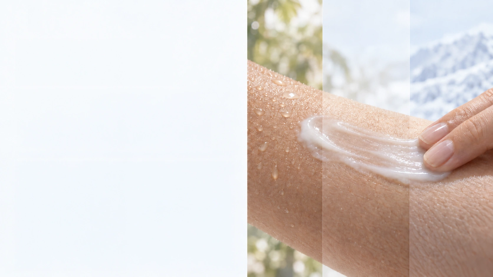
Skincare experience begins before efficacy can be perceived.
From first contact, the skin senses richness, weight, spreadability, glide, absorption and after-feel. Together, these tactile cues shape perceived quality, comfort and willingness to continue use.
A formula that feels heavy in a hot, humid climate may feel appropriately nourishing in a cool, dry environment. Dry and oily skin may also experience the same formula very differently.
High Humidity
Higher Temperature
Moderate Humidity
Moderate Temperature
Low Humidity
Lower Temperature
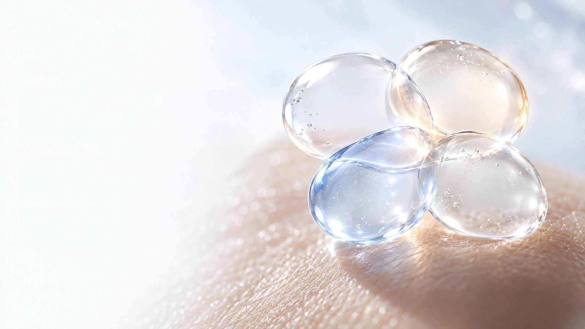
SKIN SENSORY STANDARD
Words such as fresh, nourishing, silky and non-sticky are useful—but inherently subjective.
Oil content, viscosity or any single physical value cannot fully describe how a product feels on real skin.
SUBJECTIVE LANGUAGE
OUR SCIENCE
FROM SUBJECTIVE FEELING TO MEASURABLE DESIGN
To make tactile performance more objective, comparable and applicable, the A&S research team established two proprietary evaluation indices.
LFI and SGI are complementary, independent dimensions—not measures of better or worse.
What kind of skin feel is suited to which skin, user and environment?
SKIN SENSORY STANDARD
LFI evaluates the relative richness and consistency of the lipid film remaining on the skin after product application.
Light Film
0–5.0
Balanced Film
>5.0–10.0
Rich Film
>10.0
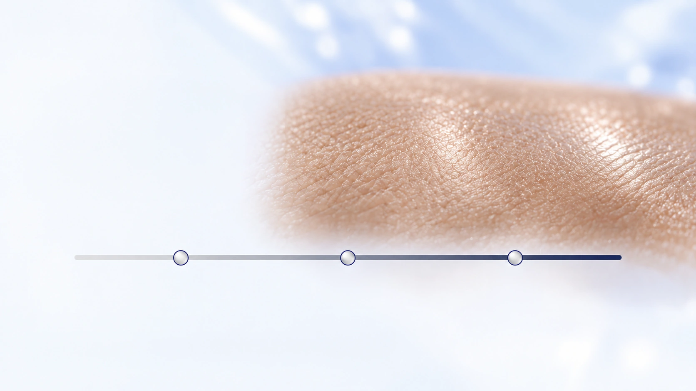
SKIN SENSORY STANDARD
SGI evaluates relative skin-glide potential based on standardized changes in skin oil and moisture after product application.
Soft Glide
0–20%
Smooth Glide
>20–40%
Silky Glide
>40%
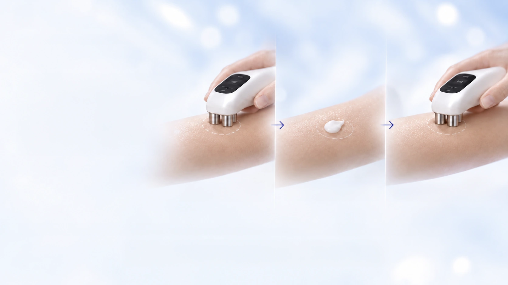
SKIN SENSORY STANDARD
A controlled before-and-after protocol
The same test area is measured before and after a fixed amount of product is applied and allowed to equilibrate.
Oil · Moisture · Reflectance
Fixed test area · Fixed amount
Repeat Oil · Moisture · Reflectance
SKIN SENSORY STANDARD
Changes from baseline are translated into two complementary relative indices.
ΔValue = Value after − Value before
Reported in index points
Reported as relative skin-glide potential (%)
Skin Sensory Standard
A structured framework for assessing the performance and relevance of the LFI and SGI methods as the reference dataset develops.
Internal acceptance target:
CV ≤ 15%
Assesses variation among repeated readings collected under the same standardized conditions.
Assesses whether the indices can distinguish reference formulations with different film and glide profiles.
Compares the direction of index changes with expert sensory assessment of film richness, smoothness and glide.
Schematic Representation · Not Study Results
Evaluation criteria and thresholds remain provisional and will be reviewed as the reference dataset expands.
Skin Sensory Standard
Two independent dimensions create a clearer picture of how a product feels on the skin.
Cushioned & nourishing
Rich yet silky
Daily conditioning
Light & fresh
Light yet refined
Designed to describe sensory character—
not to rank product quality.
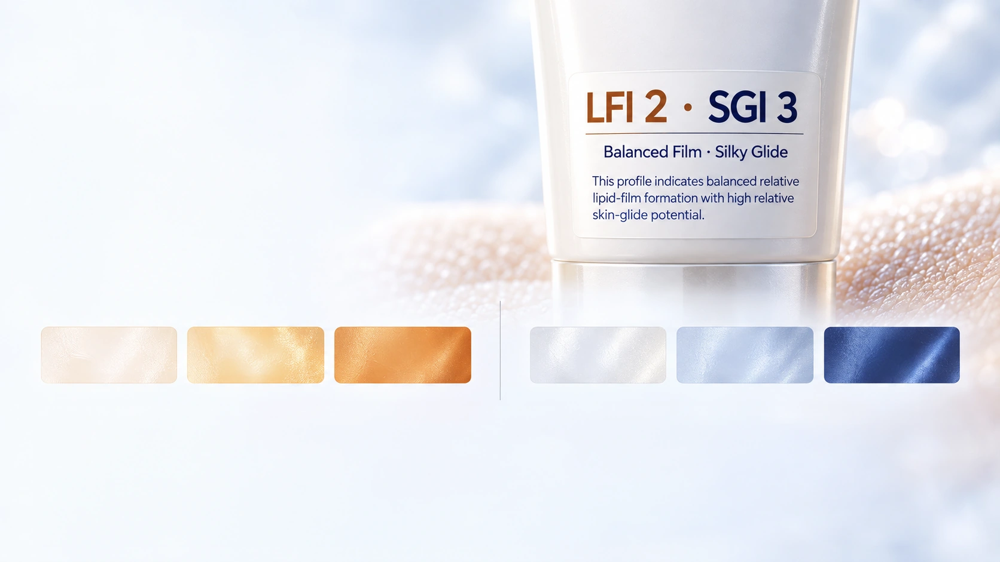
Product Index Label
Each evaluated product is assigned one LFI level and one SGI level. Displayed together, they provide an at-a-glance profile of how the formula feels on the skin.
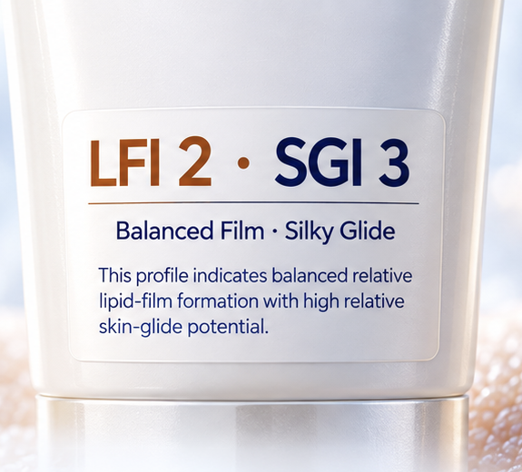
0–5.0 index points
>5.0–10.0 index points
>10.0 index points
0–20%
>20–40%
>40%
Unlike SPF or PA, LFI and SGI do not indicate protection, efficacy or product quality.
They describe two independent dimensions of sensory character under standardized A&S test conditions.
A&S proprietary classification. Product profiles should be compared only when measured using the same standardized protocol.
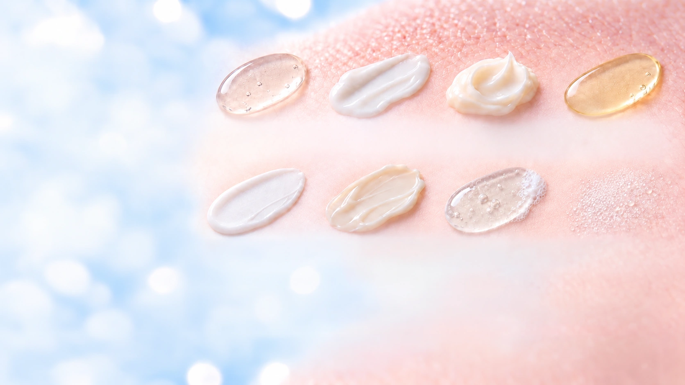
Application Scope
Designed for topical products that leave a measurable sensory profile on the skin.
Lightweight finish · rapid spread
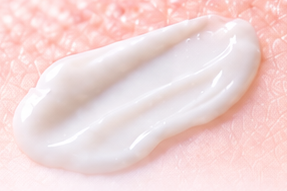
Balance of film and glide
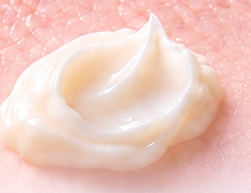
Richness · cushion · residual feel
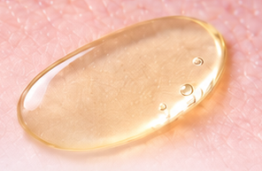
Lipid presence · mobility
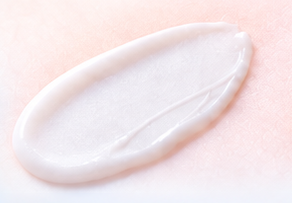
After-feel · smooth application
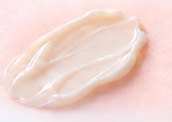
Slip · comfort · lasting film
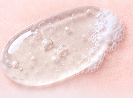
In-use glide · post-rinse feel
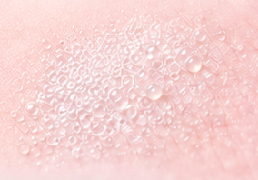
Fine dispersion · weightless feel
LFI and SGI describe how a formula feels—not whether one product type is better than another.
For rinse-off cleansing, in-use glide and post-rinse skin feel should be evaluated separately. Test site, dose, water exposure, rinsing conditions and equilibration time must be standardized.
Masks, scalp or hair products, and color cosmetics require protocols adapted to their intended use.